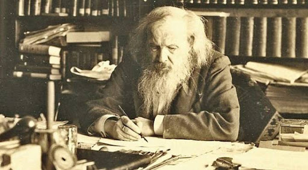
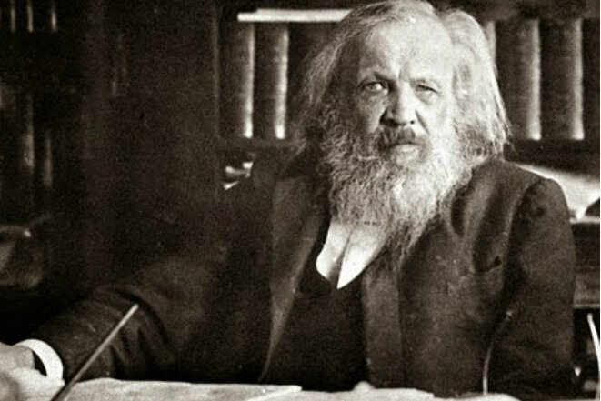
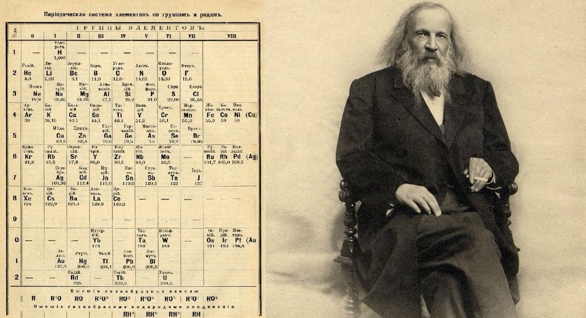
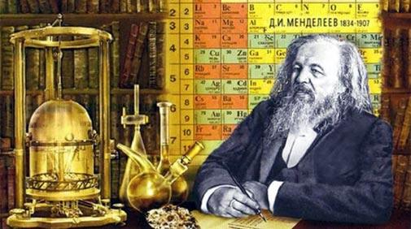
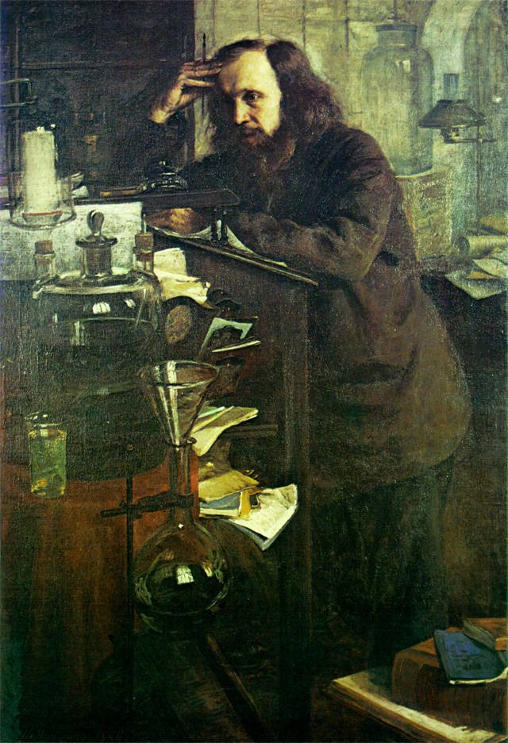

ТКАЧ МАКСИМ ПОВІДОМЛЕННЯ ПРО -
БІОГРАФІЯ МЕНДЕЛЕЕВА
Дмитро́ Іва́нович Менделє́єв (рос. Дмитрий Иванович Менделеев; 27 січня (8 лютого) 1834, Тобольськ — 20 січня (2 лютого) 1907, Санкт-Петербург) — російський хімік, один з авторів періодичної таблиці хімічних елементів. У 1882 році Лондонське королівське товариство присудило золоті медалі Деві з формулюванням «За відкриття періодичних співвідношень атомних ваг» спільно Менделєєву й німецькому хіміку Лотару Юліусу Маєру.
ЖИТТЯ Менделеева
Дмитро Іванович Менделєєв народився 8 лютого 1834 року у Тобольську, у родині директора місцевої гімназії. З 1850 року навчався на фізико-математичному факультеті Петербурзького педагогічного інституту, який у 1855 році закінчив його із золотою медаллю. Відтак його було направлено учителем гімназії спочатку до Сімферополя, а потім до Одеси, де він працював у Рішельєвському ліцеї. У 1856 році Дмитро Менделєєв відправився до Петербургу й захистив магістерську дисертацію за темою «Про питомі об'єми», після чого на початку 1857 року його було прийнято приват-доцентом на кафедру хімії Петербурзького університету. У 1859–1861 роках він перебував у науковому відрядженні в Німеччині, у Гейдельберзькому університеті. У 1860 році Менделєєв взяв участь у роботі першого міжнародного хімічного конгресу в Карлсруе.
У 1861 році Менделєєв написав перший у Російській імперії підручник з органічної хімії. Навесні 1862 року підручник було визнано гідним повної Демидівської премії. У 1863 році він отримав місце професора в Петербурзькому технологічному інституті, а в 1866 році — у Петербурзькому університеті, де читав лекції з органічної, неорганічної й технічної хімії. У 1865 році Менделєєв захистив докторську дисертацію за темою «Про сполуки спирту з водою».

У 1867 році Менделєєв перейшов у Петербурзький університет на посаду професора хімії й повинен був читати лекції з неорганічної хімії. Однак, на його думку, ні в Росії, ні за кордоном не було курсу загальної хімії, який можна було б рекомендувати студентам. Дмитро Іванович вирішив написати його сам.
Ця праця одержала назву «Основи хімії», і виходила протягом декількох років окремими випусками. Працюючи над другим випуском, Менделєєв зіштовхнувся зі складнощами, пов'язаними з послідовністю викладу матеріалу. Спочатку він хотів згрупувати всі описані ним елементи за валентностями, але потім обрав інший метод і об'єднав їх в окремі групи, виходячи з подібності властивостей і атомної ваги. На той час вже були спроби скласти таблиці елементів. Німецький хімік Ґмелін (нім. Gmelin), опублікував свою таблицю в 1843 році. У 1857 році англійський хімік Одлінг (англ. William Odling) запропонував свою. Однак зв'язок груп елементів між собою залишався незрозумілим. Менделєєву вдалося знайти його, розташувавши всі елементи в порядку зростання їхньої атомної маси.
Написавши на окремих картках назви елементів з позначенням їхньої атомної маси і корінних властивостей, Менделєєв став розкладати їх у різноманітних комбінаціях, переставляючи і змінюючи місцями. Справа ускладнювалася тим, що багато елементів тоді ще не були відкриті, а атомна вага уже відомих визначена з великими похибками. Однак Дмитро Іванович незабаром виявив закономірність. У лютому 1869 року Менделєєв розіслав російським і закордонним хімікам надрукований на окремому аркуші «Досвід системи елементів, заснований на їхній атомній вазі і хімічній подібності».
Перший варіант періодичної таблиці досить сильно відрізнявся від звичної таблиці Менделєєва. Кілька елементів, як потім виявилося, були в цьому першому варіантові розміщені не за своїми місцями. Однак, зіставляючи властивості елементів, що потрапили у вертикальні стовпчики, можна було ясно бачити, що вони періодично змінюються мірою зростання атомної ваги. Незбіжність у своєму періодичному ряді Менделєєв пояснив тим, що науці відомі ще не всі хімічні елементи.
Він залишив у таблиці чотири незаповнені клітинки, але спрогнозував їхню атомну вагу і хімічну подібність. Він також виправив неточно визначені атомні маси елементів. Перший варіант таблиці Дмитро Іванович згодом відкорегував. Поряд з головними груповими елементами Менделєєв став виділяти підгрупи. Він виправив атомну вагу одинадцяти елементів і змінив місце розташування двадцятьох. У 1871 році періодична таблиця прийняла цілком сучасний вигляд. Однак, ніхто з відомих європейських хіміків не оцінив важливості зробленого Менделєєвим відкриття.
Ставлення до періодичного закону змінилося тільки в 1875 році, коли був відкритий елемент галій, властивості якого збігалися з прогнозами Менделєєва. Новим тріумфом Менделєєва стало відкриття в 1879 році скандію, а в 1886 — германію, властивості яких також відповідали описам Менделєєва.
Пам'ятник Д. Менделєєву на території КПІ
У наступні роки з-під пера Менделєєва вийшло ще кілька основних праць з різних розділів хімії. Його повна наукова і літературна спадщина величезна і містить 431 роботу. Праці Менделєєва отримали широке міжнародне визнання. Він був обраний членом багатьох академій наук, іноземних наукових товариств. Однак Російська академія наук на виборах 1880 року забалотувала його через внутрішні суперечки між «російською» та «німецькою партіями», які тоді існували в РАН[10].
Пішовши в 1890 році у відставку, Менделєєв брав активну участь у виданні Енциклопедичного словника Брокгауза й Ефрона, був консультантом у пороховій лабораторії при Морському міністерстві. Провівши необхідні дослідження, усього за три роки він розробив ефективний склад бездимного пороху. У 1893 році Менделєєв був призначений хранителем (керівником) Головної палати мір і ваги.
Помер Дмитро Іванович Менделєєв у лютому 1907 року в Петербурзі від запалення легень.

НАУЧНИЙ ВНЕСОК
Дмитро Іванович Менделєєв — автор фундаментальних досліджень з хімії, фізики, метрології, метеорології, економіки, автор основних праць з повітроплавання, сільського господарства, хімічної технології, народної освіти та інших робіт, тісно пов'язаних з потребами розвитку продуктивних сил Російської імперії.
У 1854–1856 роках Дмитро Менделєєв досліджував явища ізоморфізму, що розкривають відносини між формою кристалів та хімічним складом сполук, а також залежність властивостей елементів від величини їхніх атомних мас. У 1860 році він відкрив «температуру абсолютного кипіння рідин», або критичну температуру. Але 16 грудня 1860 писав він з Гейдельберга попечителеві Санкт-Петербурзького навчального округу І. Д. Делянову, що: «… головним предметом моїх занять є фізична хімія».
У 1859 році він сконструював пікнометр — прилад для визначення густини рідини. У 1865–1887 роках Менделєєв створив гідратну теорію розчинів, розвинув ідеї про існування сполук змінного складу.
Досліджуючи гази, Менделєєв знайшов у 1874 році загальне рівняння стану ідеального газу, що включає як частковість залежність стану газу від температури, виявлену у 1834 році фізиком Б. П. Е. Клапейроном (рівняння Клапейрона-Менделєєва).
У 1877 році Менделєєв висунув гіпотезу походження нафти з карбідів важких металів, яка, правда, на сьогодні більшістю вчених не приймається; запропонував принцип дробової перегонки при переробці нафти. У 1880 році він висунув ідею підземної газифікації вугілля. Також Менделєєв займався питаннями хімізації сільського господарства, пропагував використання мінеральних добрив, зрошення посушливих земель. Спільно з І. М. Чельцовим брав у 1890–1892 роках участь у розробці бездимного пороху.
Дмитро Іванович Менделєєв є автором низки робіт з метрології: він створив точну теорію ваг, розробив найкращі конструкції коромисла і аретира, запропонував найточніші прийоми зважування.
Свого часу інтереси Менделєєва були близькі до мінералогії, його колекція мінералів дбайливо зберігається і зараз у Музеї кафедри мінералогії Санкт-Петербурзького університету, а друза гірського кришталю з його столу є одним з найкращих експонатів у вітрині кварцу. Малюнок цієї друзи він помістив у перше видання «Загальної хімії» (1903 рік). Студентська робота Дмитра Менделєєва була присвячена ізоморфізму в мінералах.

ПЕРІОДИЧНИЙ ЗАКОН

Працюючи над працею «Основи хімії», Дмитро Іванович Менделєєв відкрив у лютому 1869 року один з фундаментальних законів природи — періодичний закон хімічних елементів.
6 березня 1869 знамениту доповідь Менделєєва «Співвідношення властивостей з атомною масою елементів» прочитав М. О. Меншуткін на засіданні Російського хімічного товариства. У тому ж році це повідомлення німецькою мовою з'явилося в журналі «Zeitschrift für Chemie», а в 1871 році в журналі «Annalen der Chemie» була здійснена розгорнута публікація Д. І. Менделєєва, присвячена його відкриттю — «нім. Die periodische Gesetzmässigkeit der Elemente» (Періодична закономірність хімічних елементів).
Окремі вчені в низці країн, особливо в Німеччині, співавтором відкриття вважають Лотара Маєра. Істотна відмінність цих систем полягає в тому, що таблиця Лотара Маєра — це один з варіантів класифікації відомих на той час хімічних елементів; виявлена Дмитром Менделєєвим періодичність — це система, яка дала розуміння закономірності, що дозволила визначити місце в ній елементів, невідомих в той час, передбачити не тільки існування, але і дати їх характеристики.
Розвиваючи в 1869–1871 роках ідеї періодичності, Дмитро Іванович Менделєєв увів поняття про місце елемента в періодичній системі як сукупності його властивостей у зіставленні з властивостями інших елементів. На цій основі, зокрема, спираючись на результати вивчення послідовності зміни склоутворювальних оксидів, виправив значення атомних мас 9 елементів (берилію, індію, урану та ін.) Передбачив у 1870 році існування, обчислив атомні маси й описав властивості трьох ще не відкритих тоді елементів — «екаалюмінію» (відкритий в 1875 році і названий галієм), «екабору» (відкритий в 1879 році і названий скандієм) і «екасіліцію» (відкритий в 1885 році і названий германієм). Потім пророкував існування ще восьми елементів, у тому числі «двітеллура» — полонію (відкритий у 1898 році), «екайоду» — астату (відкритий у 1942–1943 роках), «екамарганцю» — технецію (відкритий у 1937 році), «двімарганцю» — ренію (відкритий у 1925 році), «екацезію» — франція (відкритий у 1939 році).
ДОСЛІДЖЕННЯ ГАЗІВ
Ця тема в наукової діяльності Д. І. Менделєєва пов'язана, перш за все, з пошуком вченим фізичних причин періодичності. Оскільки властивості елементів перебували в періодичній залежності від атомних ваг, маси, дослідник шукав можливість пролити світло на цю проблему, з'ясовуючи причини сил тяжіння і за допомогою вивчення властивостей їхнього передавального середовища.
Концепція «світового ефіру» мала в XIX столітті великий вплив на можливе рішення даної проблеми. Передбачалося, що «ефір», що заповнює міжпланетний простір, є середовищем, що передає світло, тепло і гравітацію. Дослідження сильно розріджених газів представлялося можливим засобом доведення існування названої субстанції, коли властивості «звичайної» речовини вже не здатні були б приховувати властивості «ефіру».
Одна з гіпотез Д. І. Менделєєва зводилася до того, що специфічним станом газів повітря при великому розрідженні і міг виявитися «ефір» або якийсь газ з дуже малою вагою. Дмитро Менделєєв написав на відбитку з «Основ хімії», на періодичній системі 1871 року: «Легше всіх ефір, в мільйони разів», а в робочому зошиті 1874 року вчений висловлює ще більш ясно хід думки: «При нульовому тиску у повітря є деяка щільність, це і є ефір!». Проте серед його публікацій цього часу таких певних міркувань не висловлено[11].
У контексті припущень, пов'язаних з поведінкою сильно розрідженого газу (інертного — «найлегшого хімічного елемента») в космічному просторі, Д. І. Менделєєв спирається на відомості, отримані астрономом А. А. Бєлопольським: «Інспектор Головної Палати мір і ваг, обов'язково забезпечив мене наступними результатами новітніх досліджень, у тому числі і Бєлопольського». А далі він прямо посилається на ці дані у своїх висновках. При всій гіпотетичній спрямованості вихідних передумов цих досліджень, основним і найважливішим результатом в області фізики, отриманим завдяки ним Дмитром Менделєєвим, було виведення рівняння стану ідеального газу, що містить універсальну газову сталу. Також дуже важливим, але трохи передчасним, було запропоноване Д. І. Менделєєвим введення термодинамічної шкали температур.
Вченим також було обрано правильний напрямок для опису властивостей реальних газів. Віріальні розкладання, використані ним, відповідають першим наближенням у відомих зараз рівняннях для реальних газів.
У розділі, що має відношення до досліджень газів і рідин, Дмитром Івановичем Менделєєвим написано 54 роботи.

ЦИТАТИ МЕНДЕЛЕЕВА
„Теория, не проверяемая опытом, при всей красоте концепции теряет вес, не признается; практика, не опирающаяся на взвешенную теорию, оказывается в проигрыше и убытке.“
— Дмитрий Иванович Менделеев
„Школа — это мастерская, где формируется мысль подрастающего поколения, надо крепко держать ее в руках, если не хочешь выпустить из рук будущее.“
— Дмитрий Иванович Менделеев
„Умейте всегда перенестись на точку зрения противоположного мнения — это и есть истинная мудрость.“
— Дмитрий Иванович Менделеев
„Не трогать веру нельзя. Она — основа религии, а любая религия в ваши дни — грубое и примитивное суеверие. Суеверие есть уверенность, на знании не основанная. Наука борется с суевериями, как свет с потемками…“
— Дмитрий Иванович Менделеев